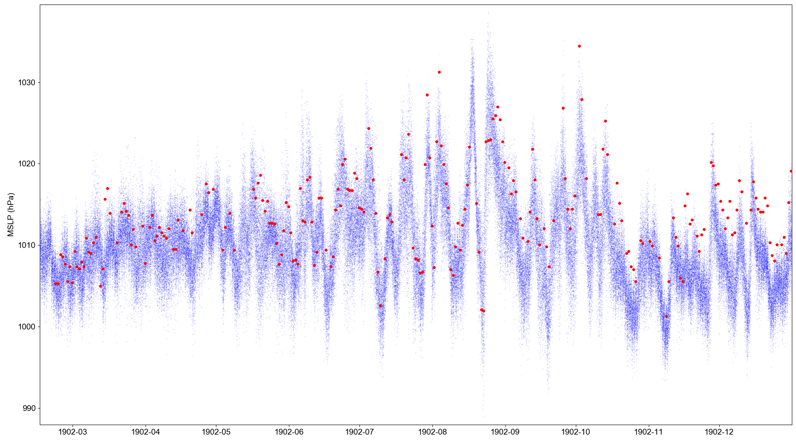

DWR_Asuncion_Pgy (Comparison with 20CRv3 MSLP)¶

{kind=link}
Blue dots are the 20CRv3 MSLP ensemble at the location of the station (80 ensemble members, with data every three hours). Red dots are the station observations. (Once a day, at 14:00 local up to August, at 7:00 local from September 1st).
Code to make the figure¶
#!/usr/bin/env python
# Plot a comparison of a set of ship obs against 20CRv3
# Requires 20CR data to have already been extracted with get_comparators.py
import os
import pickle
import SEF
import datetime
import numpy
import matplotlib
from matplotlib.backends.backend_agg import \
FigureCanvasAgg as FigureCanvas
from matplotlib.figure import Figure
import argparse
parser = argparse.ArgumentParser()
parser.add_argument("--id", help="Station to compare",
type=str,required=True)
args = parser.parse_args()
obs_file="../../../../sef/Argentinian_DWR/1902/%s_MSLP.tsv" % args.id
pickled_20CRdata_dir="%s/sef_comparators/Argentinian_DWR/" % os.getenv('SCRATCH')
# Load the obs
obs=SEF.read_file(obs_file)
# load the pickled 20CR data
rdata={}
rmax=0.0
rmin=1000000.0
start_day=datetime.datetime(1902, 2, 1, 0)
end_day =datetime.datetime(1902,12,31, 0)
current_day=start_day
while current_day<=end_day:
for hour in (0,3,6,9,12,15,18,21):
pfile="%s/%04d/%02d/%02d/%02d/%s_prmsl.pkl" % (pickled_20CRdata_dir,
current_day.year,
current_day.month,
current_day.day,
hour,args.id)
fh=open(pfile,'rb')
nrd=pickle.load(fh)/100.0
fh.close()
rmax=max(rmax,max(nrd))
rmin=min(rmin,min(nrd))
rdata["%04d%02d%02d%02d" % (current_day.year,current_day.month,
current_day.day,hour)]=nrd
current_day=current_day+datetime.timedelta(days=1)
# Set up the plot
aspect=16.0/9.0
fig=Figure(figsize=(10.8*aspect,10.8), # Width, Height (inches)
dpi=100,
facecolor=(0.88,0.88,0.88,1),
edgecolor=None,
linewidth=0.0,
frameon=False,
subplotpars=None,
tight_layout=None)
canvas=FigureCanvas(fig)
font = {'family' : 'sans-serif',
'sans-serif' : 'Arial',
'weight' : 'normal',
'size' : 14}
matplotlib.rc('font', **font)
# Single axes - var v. time
ax=fig.add_axes([0.05,0.05,0.945,0.94])
# Axes ranges from data
ax.set_xlim(datetime.datetime(1902, 2,15,0),
datetime.datetime(1902,12,31,23))
ax.set_ylim(min(rmin,min(obs['Data']['Value']))-1,
max(rmax,max(obs['Data']['Value']))+1)
ax.set_ylabel('MSLP (hPa)')
# Ensemble values - one point for each member at each time-point
t_jitter=numpy.random.uniform(low=-6,high=6,size=80)
for key in rdata:
dtime=datetime.datetime(int(key[0:4]),int(key[4:6]),int(key[6:8]),
int(key[8:10]))
ensemble=rdata[key] # in hPa
dates=[dtime+datetime.timedelta(hours=t) for t in t_jitter]
ax.scatter(dates,ensemble,
5,
'blue', # Color
marker='.',
edgecolors='black',
linewidths=0.0,
alpha=0.3,
zorder=50)
# Observations
for index, row in obs['Data'].iterrows():
if row['Value'] != row['Value']: continue # Missing data
dte=datetime.datetime(row['Year'],row['Month'],row['Day'],int(row['HHMM']/100),
row['HHMM']%100)
ax.scatter(dte,row['Value'],
100,
'red', # Color
marker='.',
edgecolors='red',
linewidths=0.0,
alpha=1.0,
zorder=100)
fig.savefig('figures/pressure_comparison/%s.png' % args.id)
This script requires pre-extracted 20CRv3 data: